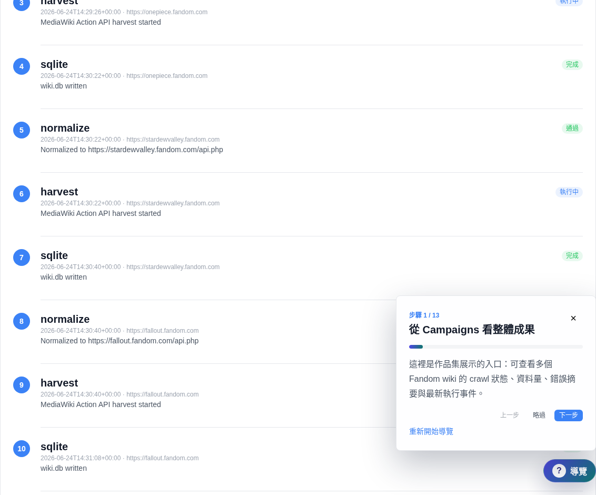
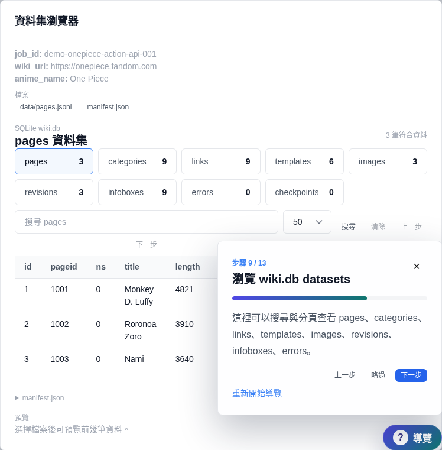
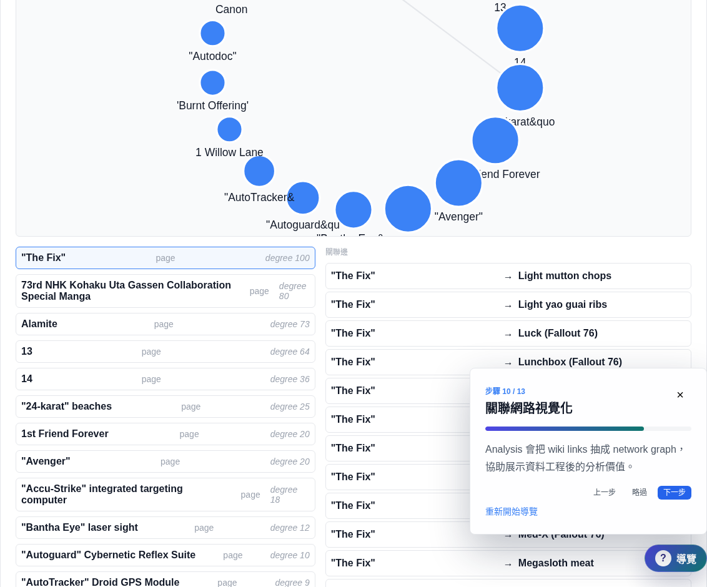
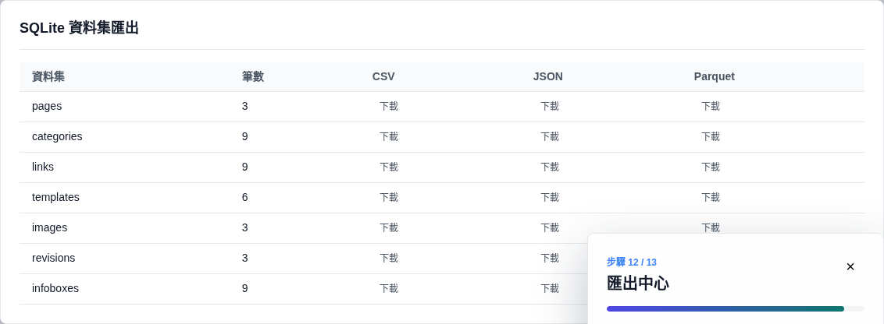

合規爬取流程
URL normalization、robots check、MediaWiki API discovery、rate limit、retry 與 checkpoint。
Portfolio Live Demo
API-first wiki crawler、SQLite data pipeline、Browse / Analysis / Export dashboard，以及面試導覽小幫手的完整展示版本。
URL normalization、robots check、MediaWiki API discovery、rate limit、retry 與 checkpoint。
從 wiki.db 檢視 pages、categories、links、templates、images、revisions、infobox 與 text。
分類長條、文字摘要、network graph、資料品質與 compliance log 都能在 Web UI 檢查。
Guided Walkthrough
浮動導覽會跳到 Campaigns、Scraper、Process、Browse、Analysis、Export 與 Compliance Log，並高亮使用者應該看的區塊。



